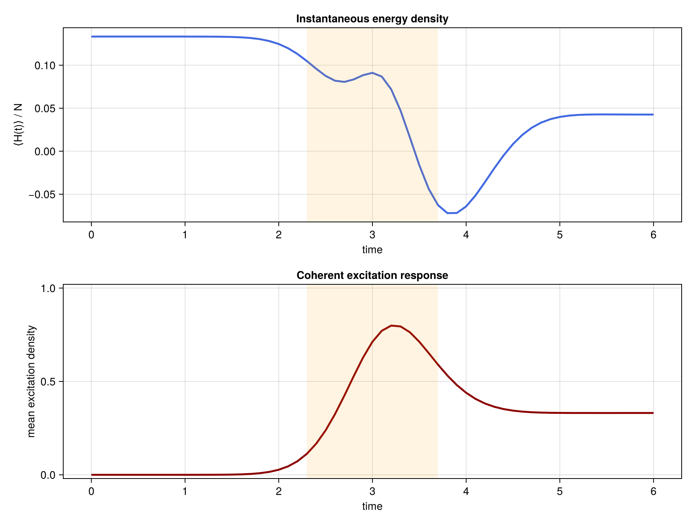

Laser-driven TDVP dynamics
This example shows how an ordinary Julia function can represent a time-dependent Hamiltonian. At each timestep, we evaluate that function at the interval midpoint, construct an MPO, and pass it to the usual TDVP routine.
Advanced figures for the laser-driven chain are generated by scripts/laser_driven_tdvp.jl.
Laser-driven spin chain
We consider a closed interacting spin chain driven by a Gaussian pulse,
\[H(t) = -J\sum_{j=1}^{N-1} Z_j Z_{j+1} -\frac{\Delta}{2}\sum_{j=1}^{N} Z_j +\frac{\Omega(t)}{2}\sum_{j=1}^{N} X_j ,\]
where
\[\Omega(t) = \Omega_0 \exp\left[-\frac{(t-t_c)^2}{2\sigma^2}\right].\]
The longitudinal field sets the detuning, the Gaussian transverse field drives coherent spin flips, and the Ising interaction makes the response genuinely many-body. Starting from $|\psi(0)\rangle=|\downarrow\cdots\downarrow\rangle$, we monitor the instantaneous energy density and the mean excitation density
\[\bar n(t)=\frac{1}{N}\sum_j \left\langle\frac{I+Z_j}{2}\right\rangle .\]
Model and parameters
using ITensors
using ProcessTensors
using Statistics: mean
const N = 6
const J = 0.4
const detuning = 1.0
const Ω0 = 2.5
const pulse_center = 1.2
const pulse_width = 0.35
const dt = 0.1
const final_time = 2.4
const maxdim = 60
const cutoff = 1e-10
sites = siteinds("S=1/2", N)
initial_state = MPS(sites, fill("Dn", N))6-element MPS{Hilbert}
site dims: 2, 2, 2, 2, 2, 2
link dims: 1, 1, 1, 1, 1
maxlinkdim: 1
combiners: none
tensors:
[1] ((dim=2|id=306|"S=1/2,Site,n=1"), (dim=1|id=260|"Link,l=1"))
[2] ((dim=1|id=260|"Link,l=1"), (dim=2|id=695|"S=1/2,Site,n=2"), (dim=1|id=184|"Link,l=2"))
[3] ((dim=1|id=184|"Link,l=2"), (dim=2|id=708|"S=1/2,Site,n=3"), (dim=1|id=521|"Link,l=3"))
[4] ((dim=1|id=521|"Link,l=3"), (dim=2|id=21|"S=1/2,Site,n=4"), (dim=1|id=924|"Link,l=4"))
[5] ((dim=1|id=924|"Link,l=4"), (dim=2|id=169|"S=1/2,Site,n=5"), (dim=1|id=511|"Link,l=5"))
[6] ((dim=1|id=511|"Link,l=5"), (dim=2|id=240|"S=1/2,Site,n=6"))
The pulse envelope and Hamiltonian are ordinary Julia functions. Calling laser_driven_hamiltonian(t) produces the OpSum at time t.
gaussian_drive(t::Real) =
Ω0 * exp(-((t - pulse_center)^2) / (2pulse_width^2))
function laser_driven_hamiltonian(t::Real)
H = OpSum()
for j in 1:(N - 1)
H += -J, "Z", j, "Z", j + 1
end
for j in 1:N
H += -detuning / 2, "Z", j
H += gaussian_drive(t) / 2, "X", j
end
return H
end
H_at_pulse_center = MPO(laser_driven_hamiltonian(pulse_center), sites)
@assert length(H_at_pulse_center) == NMidpoint TDVP evolution
On an interval $[t_n,t_n+\Delta t]$, the midpoint approximation uses
\[H_{n+\frac12}=H\left(t_n+\frac{\Delta t}{2}\right)\]
for one ordinary TDVP step,
\[|\psi(t_{n+1})\rangle \approx \exp[-i\Delta t\,H_{n+\frac12}]|\psi(t_n)\rangle .\]
We use two-site TDVP (nsite=2) so that the MPS bond dimensions can grow as the drive and interactions generate entanglement. The core workflow is the midpoint OpSum → MPO → tdvp sequence visible inside this loop.
In earlier versions of ITensorMPS, time-dependent Hamiltonians were defined using the TimeDependentHamiltonian type. This method is now deprecated. The current recommended approach is to define an ordinary Julia function that returns an OpSum (or MPO) for a given time. This function is then called at each time step to construct the appropriate Hamiltonian for the TDVP evolution.
nsteps = round(Int, final_time / dt)
times = collect(range(0.0; step=dt, length=nsteps + 1))
trajectory = let
ψ = copy(initial_state)
energies = Float64[]
excitations = Float64[]
norm_errors = Float64[]
for step in eachindex(times)
H_now = MPO(laser_driven_hamiltonian(times[step]), sites)
z_values = real.(expect(ψ, "Z"))
push!(energies, real(inner(ψ', H_now, ψ)) / N)
push!(excitations, mean((1 .+ z_values) ./ 2))
push!(norm_errors, abs(real(inner(ψ, ψ)) - 1))
step == length(times) && continue
t_mid = times[step] + dt / 2
H_mid = MPO(laser_driven_hamiltonian(t_mid), sites)
ψ = tdvp(
H_mid,
-1im * dt,
ψ;
time_step=-1im * dt,
nsite=2,
maxdim=maxdim,
cutoff=cutoff,
outputlevel=0,
)
end
(
final_state=ψ,
energy_density=energies,
excitation_density=excitations,
norm_error=norm_errors,
)
end
@assert maximum(trajectory.norm_error) < 1e-8
@assert all(x -> -1e-10 ≤ x ≤ 1 + 1e-10, trajectory.excitation_density)
@assert all(isfinite, trajectory.energy_density)Physical response
The energy is not conserved because the external pulse performs work on the chain. The excitation density measures the coherent population transferred away from the initial unexcited product state. The shaded interval in the script-generated figure marks one pulse width on either side of the pulse center. The plotting script uses a longer $N=12$ run than the compact executable example above, but follows exactly the same midpoint workflow.
